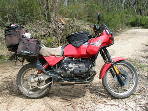
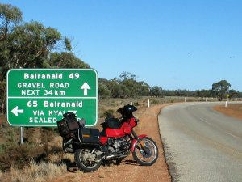
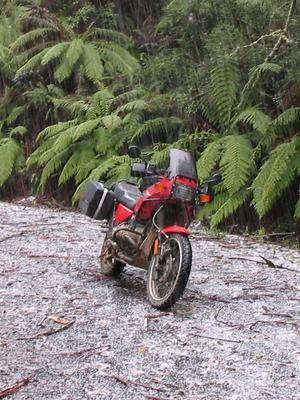
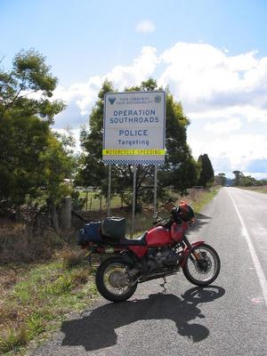
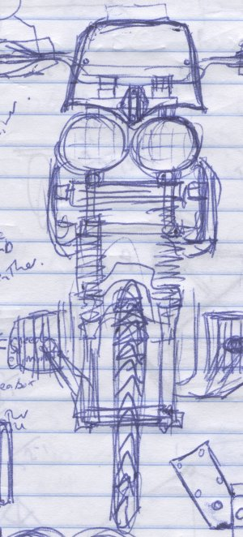

|

Back road between Lake Buffalo and Whitfield
(On the way back from Trout Rally 2005)

All roads lead to Balranald
(On the way to Wintersun Run 2005)

Hail!
(at the Dargo High Plains Rally 2004)

"Police Targeting: Motorcycle Speeding"
(on the road from Canberra to Yass, the day I bought this bike)

Original Pig Concept
|
|
R I P
Sadly, on the 29th September 2006 I crashed this bike pretty hard near Johanna, writing it off and
putting a few dents in myself too ... as much as I was tempted to buy the wreck back and do something with
it, I decided to take the money and let this one go through to the keeper ...
Modifications:
- Engine:
- Suspension & Brakes:
- WP springs / Gold valve.
Well, allegedly, the PO put it in and I've never
seen it! When I change the oil ...
- Bitubo CZE rear shock from Precision Performance.
Bellissimo!
- 320mm brake rotor conversion
(I've actually gone back to a stock R100GSPD rotor
... the big disc was very powerful, but rather grabby ...)
- CC Products fork brace.
(The stock one was rusty and bent ... and what good
is a bent fork brace? The CC one also raises the mudguard by
about 10mm, which will hopefully reduce the tendency to fill
with mud ...)
- Electrickery:
- EnDuraLast 450W Brushless Generator
14V at 2000rpm. No brushes. No diode board.
- Odyssey
PC925 Battery. This turned out to be more of a drama
than I expected, seems like most GSers go for the somewhat
smaller PC680. Got it hooked up eventually with some small mods
to the battery box.
- Ergonomics:
- 1" bar risers (Touratech).
Essential. Probably needs more, or bars with
a deeper bend.
- Small, hand-crufted polycarbonate windshield
The stocker just
threw turbulence at my head no matter how it was set, and
interfered with the raised bars. This one is narrower and
about half the height.
- &c:
Special Tools:
Shopping List:
Naked Bike?:
See the 'Original Pig Concept' sketch on the left ...
- Cibie Oscar headlights
- Small flyscreen (more polycarbonate bending!)
- either R100R Mystic dash
or some kind of bicycle computer microdashboard.
- Barkbusters (or cheapo equivalent.)
On the other hand, a lot of my impetus to do anything about this has
gone with the shorty screen ...
More far-fetched stuff:
- High energy ignition
the XLV
got much better power and efficiency with a hotter spark, perhaps it'll
work on the BMW too ... Silent Hektik make things along these lines, but sadly their pages
(and prices) are in German ... . Hotter spark might also make
starting rather easier. There's also the Omega Ignition for Airheads but it's not compatible with my
new generator.
- Dual Plugging seems to get magnificent benefits for the R100s ... but it's a pretty involved and expensive process. And then you wake up one morning and realize you need a 336 cam and a higher compression ratio, and and and ...
- Motorrad Elektrik
Nippon Denso starter.
Less current, less weight, more crank. Pretty pricey though,
probably better off getting the Bosch one rebuilt.
Photos:
Mailing Lists / Forums:
Useful Stuff:
Modified Airheads
Go Spend Money:
Vendors of BMW specific kit:
(etc, etc, etc)
Why the stupid name?
- I like to give my bikes stupid names.
- Arguably the first BMW bike was named the
Flink.
It is described thus by
BMW Motorrad USA:
The heavyish bike with its underpowered engine
requires vigorous pedaling to start.
Reminds me of someone I know.
- The, uh, bolted-together appearance of the GS reminds me of
you-know-who's monster.
|
{kind=link}